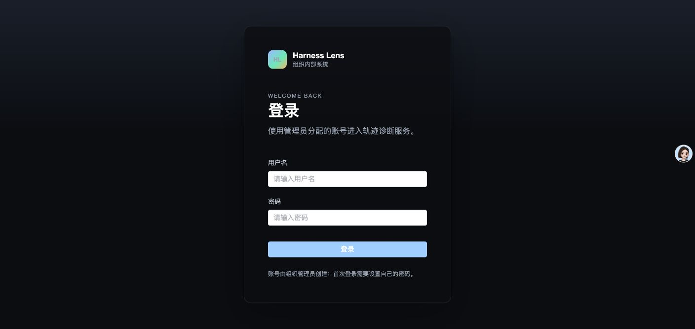
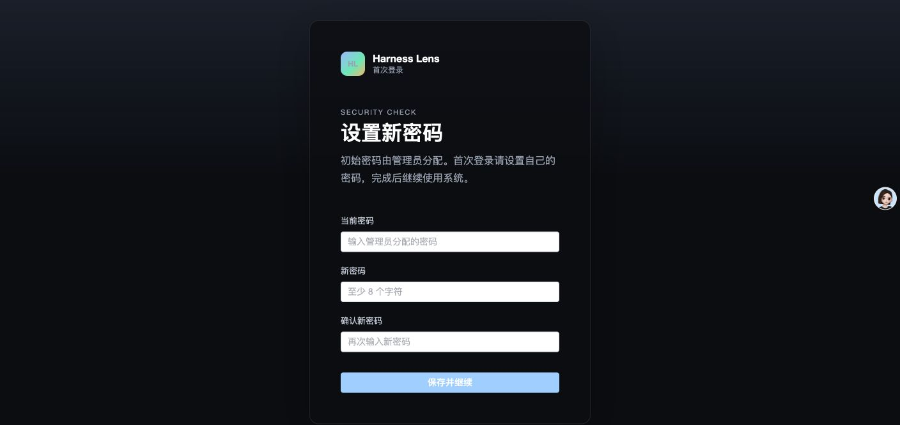
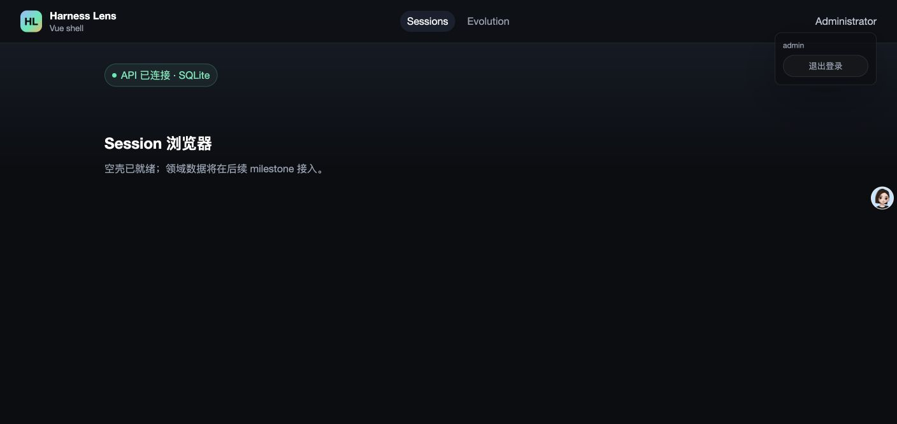
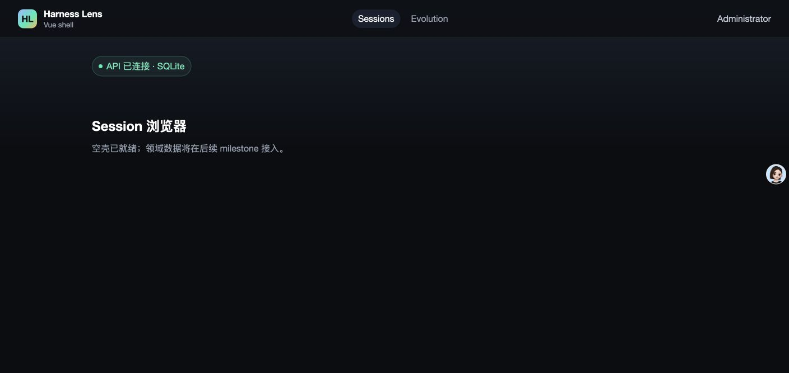
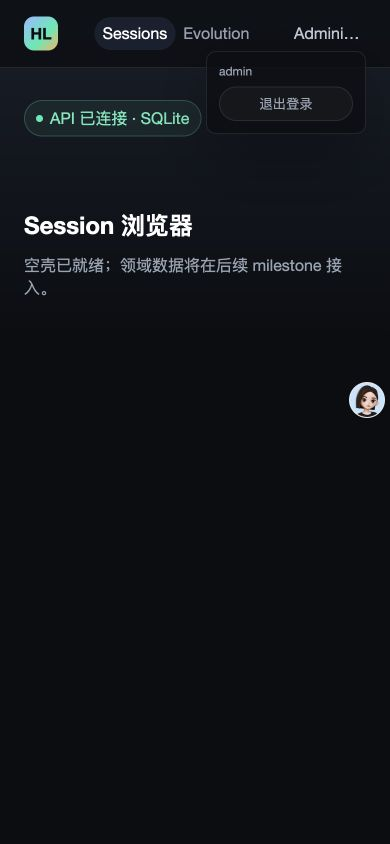

- Issue
- #31 · M1 jobs and SSE
- PR
- #79
- Commit
- 8efca2b
- Runtime
- Chrome + Vite + FastAPI
- Database
- temporary SQLite
- Heartbeat
- 1 second
- Replay limit
- 2 events per page
Harness Evolution · PR #79
M1-08 任务与 SSE 集成冒烟报告
在真实 Chrome、Vite、FastAPI 与临时 SQLite 上验证身份主链路、任务 REST、持久事件 replay、Last-Event-ID 续传、心跳、一次性票据和窄视口布局。14 项运行时场景通过；直播 event-bus 的内部发布由自动化测试覆盖。
15冒烟场景
14运行时通过
1自动化边界
0控制台告警/错误
2持久事件回放
Environment and Artifact
2026-10-25 · macOS · Chrome · localhostScenario Matrix
14 pass · 1 manual| # | 场景 | 结果 | 观测 | 证据 |
|---|---|---|---|---|
| 01 | 登录页首次渲染 | PASS | 登录表单完整渲染，初始控制台无 warning/error。 | screenshots/01-login.png console-summary.txt |
| 02 | 首登强制改密 | PASS | 临时密码登录后跳转 /change-password?redirect=/sessions。 | screenshots/02-force-change.png HTTP login=200 · mustChangeBefore=true |
| 03 | 临时账号改密 | PASS | 通过本地 API 将临时密码改为随机测试密码；change=204，refresh=200。 | HTTP change=204 HTTP refresh=200 |
| 04 | queued 任务状态 | PASS | GET 返回 status=queued、progress=0，起止时间为 null。 | jobs-summary.json |
| 05 | running/completed 任务状态 | PASS | running 进度 0.42；completed 进度 1.0，并返回 startedAt/finishedAt。 | jobs-summary.json |
| 06 | 任务不存在 | PASS | 不存在 job 返回 404 JOB_NOT_FOUND。 | jobs-summary.json |
| 07 | SSE 历史回放 | PASS | ticket cursor=0，Last-Event-ID=1 优先，replay 仅返回 seq 2、3；limit=2 时跨页未丢事件。 | sse-replay.txt |
| 08 | SSE 心跳 | PASS | 连接保持 3 秒收到两次 event: ping / data: {}，配置间隔为 1 秒。 | sse-replay.txt |
| 09 | 票据单次消费 | PASS | 同一 ticket 第二次连接返回 401 TICKET_INVALID；缺失 ticket 同为 401。 | ticket-errors.json |
| 10 | topic 授权边界 | PASS | URL 注入 topics 返回 401；多 topic 申请返回 422 VALIDATION_INVALID。 | ticket-errors.json |
| 11 | 断线续传去重 | PASS | 首次从 1 续传得到 2、3；下一次从 2 续传仅得到 3，无重复或遗漏。 | sse-reconnect-1.txt sse-reconnect-2.txt |
| 12 | 退出与新密码重登 | PASS | 用户菜单可见退出按钮；退出后以新密码登录并回到 /sessions。 | screenshots/04-user-menu.png screenshots/05-relogin-sessions.png |
| 13 | 浏览器控制台 | PASS | 全会话仅 4 条 Vite debug 连接日志，warning/error/exception 为 0。 | console-summary.txt |
| 14 | 390px 窄视口 | PASS | clientWidth=390、scrollWidth=390；用户菜单 right=366，退出按钮 right=353。 | screenshots/06-narrow-390.png narrow-metrics.json |
| 15 | 直播 event-bus 发布 | AUTOMATED | M1 公共 API 没有主动发布直播事件的入口；背压、handoff 与慢消费者关闭由提交内自动化测试覆盖。 | Automated unit/integration coverage PR #79 CI |
Issues and Observations
No defects foundNo defects were found.
Evidence
5 screenshots




Automated Coverage Assessment
4 areas reviewed| 区域 | 覆盖 | 结论 | 建议 |
|---|---|---|---|
| 身份与浏览器壳 | Computer Use 实机 + 真实 HTTP | 登录、首登改密入口、退出、新密码重登和响应式布局均有运行时证据。 | 保持浏览器控制台与 390px 溢出检查为身份相关 PR 的烟雾项。 |
| 任务 REST | 真实 FastAPI + 临时 SQLite | queued/running/completed、时间戳、进度和 404 闭集错误均符合契约。 | M2 接入真实 job producer 后增加端到端提交与完成场景。 |
| SSE 回放与票据 | 真实 HTTP 流 + 持久 SQLite 事件 | 跨页 replay、Last-Event-ID 优先、心跳、断线续传和 ticket 重放拒绝均有实际证据。 | 保留 1 秒心跳与 2 条 replay limit 的测试配置，以便暴露边界问题。 |
| 直播 event-bus 内部路径 | 自动化单元/跨栈测试 | 公开 API 在 M1 没有主动发布直播事件的入口，因此未用浏览器伪造生产者；背压与 handoff 由提交内测试覆盖。 | M2/M5 接入具体 job/run producer 后追加真实直播事件烟雾。 |
Conclusion
通过当前提交的任务 REST、持久 replay、SSE 心跳与票据边界在真实进程中按设计工作，未发现运行时缺陷。
- M1 公共 API 尚无主动发布直播事件的入口，该边界已如实标明。
- m5-08 仍需接入真实 run 资源 authorizer 与父表外键。
- MySQL 实跑与跨栈测试由 PR CI 覆盖。
证据源：Computer Use 截图、脱敏 HTTP/SSE 输出、临时 SQLite 与 PR CI。生成 HTML 不应手改。